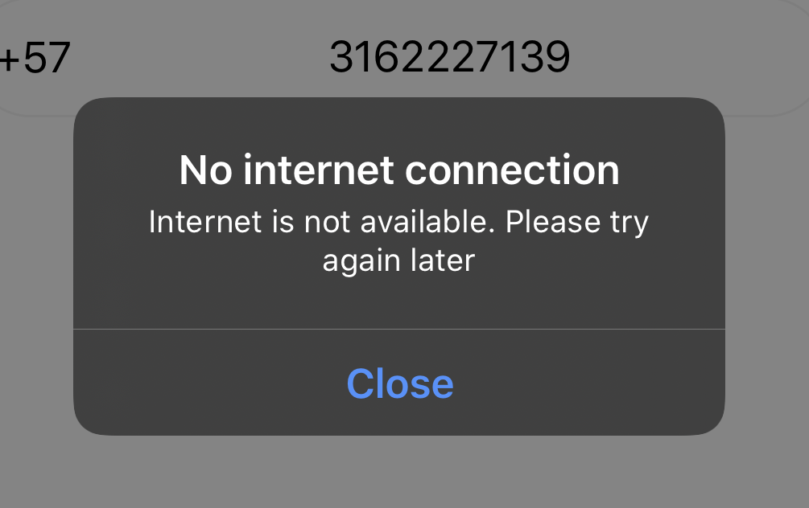

FALCON MESSENGER REPORTE DE APP MVIL
Análisis UI/UX
Análisis de Performance
Librerías
Generalidades
Colores y fuentes
En general el manejo de los colores está bien ya que se resaltan bien en modo oscuro y claro. El estilo de letra es claro y el tamaño adecuado.
En cuanto a la distribución de los elementos están distribuidos adecuadamente alrededor de la pantalla y son fácilmente accesibles.
vista 1.1: autenticación
En la vista 1 se solicita al usuario autenticación por medio de su número telefónico local. Accediendo a una base de datos remota, desplegada en Firebase que almacena la lista de los usuarios registrados en la aplicación.
Como se puede ver, esta vista restrige el acceso a otras vistas antes de ser completada por el usuario.
vista 1.2: registro
Aquí, si es la primera vez que el usuario se registra con su número telefónico, esta vista se despliega solicitando al usuario su información básica de perfil. Así, el usuario puede detallar su nombre, su imagen de perfil, y una breve descripción del mismo.
vista 2: contactos
Una vez autenticado e identificado el usuario, una de las vistas principales al alcance del usuario en el mismo nivel de jerarquía en la navegación, es la que le permite consultar los contactos almacenados en el dispositivo.
Adicionalmente, aquí realiza una consulta en Firebase por los contactos del teléfono que estén resistrados en las bases de datos remotas. De esta forma, se sabe que es otro usuario registrado, y se puede empezar un proceso de chat con éste.


¿Cómo funciona?
Steps donde la conectividad importa 🤓
-
Envío de mensaje de verificación
Antes y al solicitar reenvío

-
Verificación del código TSA
Cuando se va a iniciar el proceso de verificación del código de autenticación en dos pasos
-
Obtención de credenciales
Antes de intentar obtener la credencial de acceso
-
Edición del profile
Cuando se van a guardar los datos del usuario (Foto, nombre, teléfono y estado)